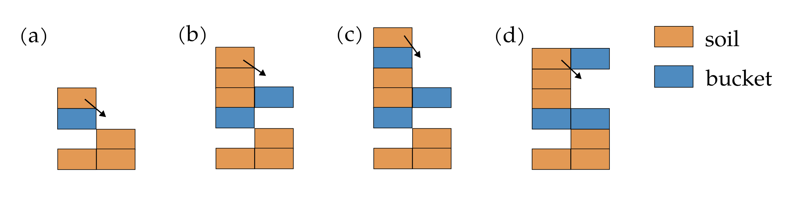

Documentation for the soil relaxation
The fourth task of this simulator is to model soil dynamics. Various models of different complexities have been developed over the years for this purpose. As this simulator focuses on performance, a simplified model is therefore employed. The model assumes that when the local slope of the soil exceeds its repose angle, the soil becomes unstable and needs to avalanche to neighbouring cells to achieve a stable state where the local slope matches the repose angle. This action is referred to as “relaxation” in this simulator.
This soil relaxation process consists of two main steps:
Terrain relaxation, where unstable soil cells on the terrain are relaxed, potentially causing avalanches onto the bucket.
Bucket soil relaxation, where unstable soil cells on the bucket are relaxed, potentially causing avalanches onto the terrain.
It is important to note that the relaxation of soil cells can sometimes trigger instability in neighbouring cells.
As a result, the relaxation process needs to be repeated multiple times to achieve an equilibrium state.
In practice, several thousand iterations may be required to reach full equilibrium, although the overall shape of the terrain can often be obtained after just a few iterations.
To balance computational efficiency and accuracy, the algorithm does not wait for a complete equilibrium state and instead stops after a set number of iterations, which can be specified by the max_iterations_ field of the SimParam class.
The appropriate value for max_iterations_ typically ranges from 1 to 20 and should be chosen based on the specific simulation requirements.
It is worth noting that increasing the value of max_iterations_ impacts significantly the performance of the simulator.
General description
While the detailed implementation of the relaxation process differs for terrain relaxation and bucket soil relaxation, the core algorithm remains the same and will be described in this section.
The relaxation process consists of three steps.
The first step is to identify potentially unstable soil cells. This initial selection is not intended to be precise but rather to exclude cells that are obviously stable. To avoid asymmetrical results, the list of potential unstable cells is randomized. The soil cells in this list are then processed iteratively.
The second step is to check the stability of each considered soil cell in relation to its neighbouring cells. By convention, relaxation is only performed in the X and Y directions, involving four adjacent cells and excluding diagonal cells. This choice is based on initial testing, which revealed that relaxing soil in 4 or 8 directions produced visually identical results. Relaxing in 8 directions allows for convergence to full equilibrium in less iterations than when relaxing in 4 directions, while requiring more computational time to perform each iteration. As a result, relaxing only in the X and Y directions produces a faster and simpler code. To avoid asymmetrical results, the order in which neighbouring soil cells are checked is randomized. The result of this check is a status code consisting of two digits, providing a detailed indication of the condition of the soil cell.
The third step is the actual relaxation, which occurs only if the soil cell is determined to be unstable based on the status code obtained in the previous step. The relaxation process follows the specific instructions defined by the status code. The relaxation techniques for terrain relaxation and bucket soil relaxation will be explained separately in the following sections.
It is worth noting that the second and third steps could potentially be merged. However, separating these two steps improves code testability and maintainability.
Terrain relaxation
This is done by the RelaxTerrain function in the relax.cpp file.
Note that the meaning of the two-digit codes given by the function CheckUnstableTerrainCell and used by the function RelaxUnstableTerrainCell is explained in the docstring of the function CheckUnstableTerrainCell.
In this section, the main focus is to explain the physical reasoning behind the implementation of the RelaxUnstableTerrainCell function.
Description of the different cases
Mainly four different cases are possible, as illustrated in the vertical slice diagram below. Note that, for illustration purposes, it is assumed that the repose angle allows only for one cell difference between neighbouring cells.
(a) In this case, there is no bucket. The soil can freely avalanche to the neighbouring cell, reaching a stable configuration.
(b) In this case, there is some space available below the bucket. The soil can avalanche into that position to fill the gap. Note that the soil column would still be unstable after this movement, requiring a second iteration to reach a stable configuration.
(c) In this case, there is enough space available below the bucket to reach a stable configuration. The soil fully avalanches to that position.
(d) In this case, the soil can avalanche on the top of the bucket and reach a stable configuration. Note that this is the only case in the simulator where soil from the terrain can be transferred to the bucket. Consequently, all bucket soil is generated from this case.
It is worth mentioning that the order of these cases is important, as case (d) will only occur if cases (b) and (c) are not possible. Moreover, if two bucket layers are present, soil avalanches on the top bucket layer only if there is no space available between the two bucket layers. In other words, avalanching on the bottom layer has priority over avalanching on the top layer.
Impact area
For performance optimization, the simulator only checks for soil instability within the lateral area specified by the impact_area_ field of the SimOut class.
The impact_area_ is a union of two areas: the bucket_area_, which corresponds to the lateral area where the bucket is located, and the relax_area_, which corresponds to the lateral area where unstable soil has been identified in the previous step.
By limiting the analysis to this specific region, the simulator achieves significant performance gains and becomes almost independent of the grid size.
Bucket soil relaxation
This is done by the RelaxBodySoil function in the relax.cpp file.
Note that the meaning of the two-digit codes given by the function CheckUnstableBodyCell and used by the function RelaxUnstableBodyBell is explained in the docstring of the function CheckUnstableBodyCell.
In this section, the main focus is to explain the physical reasoning behind the implementation of the RelaxUnstableBodyBell function.
Description of the different cases
Mainly four different cases are possible, as illustrated in the vertical slice diagram below. Note that, for illustration purposes, it is assumed that the repose angle allows only for one cell difference between neighbouring cells.
(a) In this case, there is no bucket. The soil can freely avalanche to the neighbouring cell, reaching a stable configuration.
(b) In this case, there is one bucket layer. The soil can freely avalanche onto the bucket, forming a stable configuration.
(c) In this case, there is one bucket layer. The soil can avalanche from one bucket layer to another, forming a stable configuration.
(d) In this case, there are two bucket layers. The soil can avalanche to one of the two adjacent bucket layer. Note that the top bucket layer has priority in the case where the soil can avalanche to both bucket layer, while, in the case where the soil should avalanche on the bottom layer, there may not be enough space for all the soil to avalanche, leading to a final state that may not be in equilibrium.
It is important to note that the presence of the bucket at the base of the soil column adds complexity to the relaxation process. There are cases where all the soil on a bucket layer can avalanche, while in other cases, only a portion of the soil may avalanche. It is crucial to handle these cases appropriately to ensure mass conservation during the relaxation process.